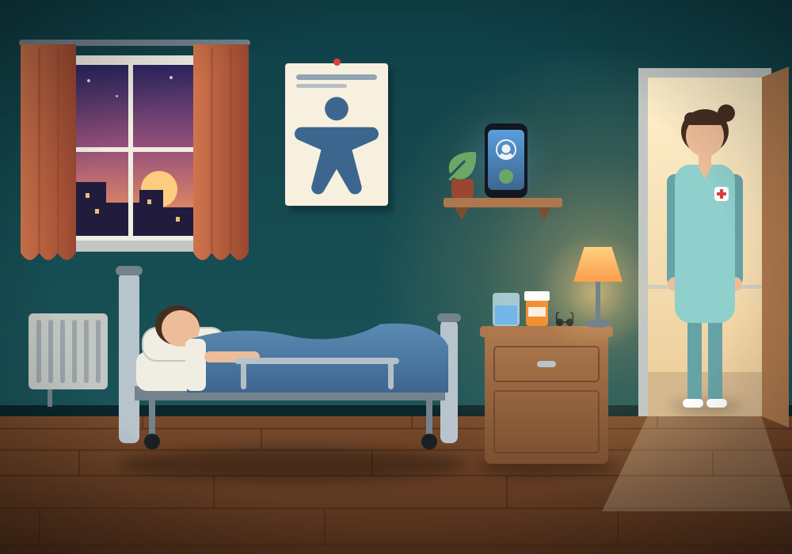

Go home
УКРUkrainian
I'm in pain
Medicine
Speak
Delete last
Clear
Holos: a voice, one press at a time
For Ukrainian adults who lost speech through stroke, brain injury or war trauma, and for the families and therapists beside them.
Rehabilitation centres in Ukraine treat many service members recovering from brain injuries and strokes who struggle to communicate. Aphasia can take reading and spelling as well as speech, so a keyboard is not enough.
Free, private (no account, no analytics, nothing leaves the device) and open source, so anyone can check it, translate it and keep it alive.
Source on rehabilitation: the Talk! (Hovory!) NGO. Mykola, Oleksandr and Yuriy are illustrative examples.
Keep talking
Start again